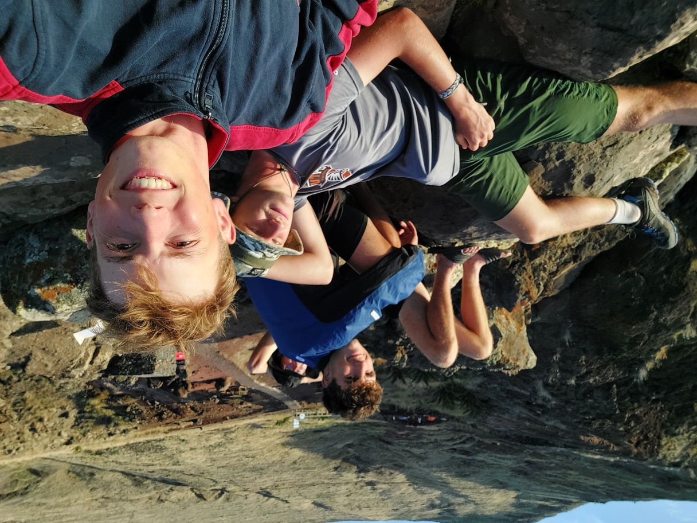
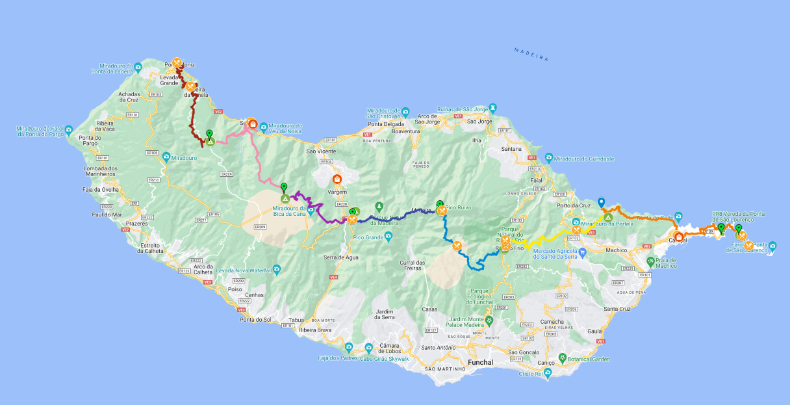
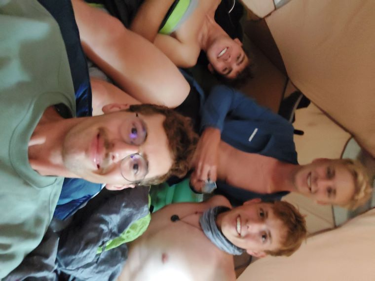

Stairs on the Trail
Sweat dripping, legs burning, we clambered up a seemingly endless staircase carved into the volcanic rock. This was just a taste of the challenges and triumphs that awaited us on our east-to-west Madeira Island crossing adventure with the boys.
Madeira, a volcanic Portuguese island rising majestically from the Atlantic, is a land of dramatic contrasts. Lush rainforests cling to craggy mountains, while crystal-clear levadas (irrigation channels) snake through the valleys, offering hikers like us a unique way to explore this diverse island paradise. But before we could revel in the breathtaking views, those never-ending stairs had to be conquered – a small taste of the challenges and triumphs that awaited us on this unforgettable trek.
Before we delve into the details of our hike, let's meet the crew!
First up is Niki, my best buddy from school. We share a thirst for adventure and crack each other up with our shared sense of humor. Always the reliable one, Niki lifts everyone's spirits with his jokes. He tackles long hikes with a full pack without much trouble, though early mornings might be his kryptonite. (And maybe the occasional lack of bathroom facilities!)
Jonas, the newest addition to our crew, joined us through our shared love of tennis (although let's be honest, he's the real athlete – college tennis player and all!). He was our designated navigator, a walking GPS with the route pre-loaded on his watch. Guiding us through (and sometimes, shall we say, interestingly close to) challenging terrain was his domain. However, Jonas also possessed a special talent – the ability to expertly whine about upcoming difficulties based solely on the route info. Blisters on his toes and a hefty backpack provided additional fuel for his playful grumbling. There where phases of the hike where Jonas was dangerously close on giving up, but after all he managed to finish the hike despite some problems.

Maxi, my brother, is the undisputed sunshine of the group. You'd be hard-pressed to find anything that dampens his spirits (except maybe...me?). His infectious enthusiasm for everything from sunrises (though he might miss them thanks to his love of sleeping in) to sunsets, and even, shall we say, the "joys" of using the great outdoors as a bathroom, kept us all in high spirits. The simple pleasures – the sea, a delicious tuna lunch (or supper!), a chance to browse a store, meeting new people – all fueled Maxi's excitement. He truly embodied the joy of the journey. Now, Maxi wasn't immune to the physical challenges of the hike. It might have even pushed him to his limits (as long as he could capture a moment for his Instagram story, of course!). But despite the occasional struggle, Maxi never complained and always kept it real with us, which I truly respect.
And then there's me, Florian, the mastermind (or maybe some would say mad scientist) behind these adventurous treks. Like last year's epic Swedish expedition where we went full remote in the Nordic tundra, this Madeira adventure was another one of my crazy ideas hatched to escape the daily grind. At 21, my office job at Siemens Energy was a far cry from mountain peaks and levada trails. Craving a fresh dose of adventure, I started searching for a challenging trek similar to the Kungsleden. And that's how I stumbled upon the breathtaking island of Madeira. Unlike Sweden's well-defined Kungsleden, Madeira offered more freedom in route planning. So, I meticulously charted our course, striving for the most flawless experience possible (although, as you'll see, flawless is a relative term!).
Island Challenges and Route Planning
Unlike our free-roaming Swedish adventure, Madeira presented unique challenges for route planning. Firstly, most of the island is a national park, and wild camping is prohibited in Portugal. This meant relying on designated campsites, which offered a more rustic experience than traditional campgrounds – think fire pits and maybe a water source, but not much else.
Limited by campsite locations, I meticulously mapped them all using Google My Maps to visualize our options. Next came the research on Madeira's must-see destinations. We aimed to include Ponta do Furado (easternmost point accessible by foot), Ribeiro Frio (charming valley with crystal-clear trout-filled springs), Pico Ruivo (the island's highest peak with breathtaking views), Fanal (known for its otherworldly "white trees"), and Porto Moniz, with its iconic natural sea pools marking the trek's end.
Connecting these points was exciting – Madeira boasts a vast network of hiking trails, many following the levadas, ingenious irrigation channels transporting water from the rainy north to the drier, agricultural south. However, as we'd discover later, trail maintenance in Madeira isn't always a priority. As long as a path leads somewhere, detours, extra distance, or less scenic routes seem acceptable. But this will be a big topic later in the story, be excited for the challenges it brought to us…

With a route designed to showcase the island's beauty, utilizing the most captivating trails and incorporating campsites (almost) every night, I finally crunched the numbers. The result? This was no stroll in the park! Over 8,000 meters of elevation gain and a distance exceeding 110 kilometers promised a serious physical challenge. Little did I know, for some of us, the mental challenge would be even greater (stay tuned!).
With the basic route established, Niki and I tackled the crucial element – food. Unlike Sweden's self-sufficient trek, daily resupply in Madeira seemed feasible. We tweaked the route to incorporate as many restaurants and bars as possible, marking supermarkets along the way for self-catering when needed (think tuna cans and bread – not exactly gourmet!).
Feeling confident with our meticulous planning, we had one crucial oversight – our water supply. We'd completely neglected that essential detail!
Day 1: Lisbon Layover Adventure and Eastern Delights
Our adventure began even before touching down in Madeira. A 9-hour Lisbon layover presented our first challenge: airport slumber. After some strategic scouting, we discovered a secluded corner with a couple of walls and conveniently located charging stations. Prepared for this unconventional sleep situation, we'd brought our trusty sleeping bags and managed to snatch some precious shut-eye. A rude awakening by the airport cleaning crew simply meant it was time for the final leg to Madeira, where we landed at 9 am.
Day one's itinerary called for a relaxed 5km hike, conquering the easternmost points accessible by both bus and foot. With some time to spare before our bus departed, we embarked on a 30-minute walk to the nearest supermarket to stock up on lunch and dinner supplies. The return journey included a pit stop by the sea, our first encounter with Madeira's breathtaking beauty. Refreshed and resupplied, we hopped on the next bus (the only one, boasting a charming 15-minute delay).
The €1.40 bus ride itself was an adventure – a 30-minute rollercoaster experience courtesy of our, shall we say, "spirited" driver. His impressive overtaking maneuvers wouldn't have been out of place in a Formula 1 race! Emerging from the bus, we found ourselves in a seemingly deserted, yet oddly touristy, landscape. Our backpacks, clearly geared for more than a casual stroll, attracted a few curious stares.
Sunscreen slathered on, we embarked on our inaugural hike. The dramatic cliffs and awe-inspiring scenery were a stark contrast to anything I'd experienced before. Our first campsite was a basic circle of rocks, perfect for pitching our tent. With our temporary home established, we tackled the final stretch to the easternmost point, officially marking the start of our island crossing.
As the sun dipped below the horizon, we indulged in a well-deserved swim in the refreshing ocean – a slightly salty mistake considering the lack of post-swim showers. To cap off the day, we enjoyed a classic UNO battle (the first of many!), a testament to the game's timeless appeal. We perched on a rocky outcrop, watching the sun paint the sky in a breathtaking sunset – a nearly romantic moment amidst the wilderness. Exhaustion beckoned, and with a full day ahead, we retreated to our tent, eager to maximize our sleep after the less-than-ideal airport slumber.

Day 2: Water and Wild Camping Woes

Day two wasn't exactly a walk in the park. Extracting ourselves from our sleeping bags proved a challenge for some (ahem, Niki!), but the promise of adventure propelled us forward. First things first – a water check. Our supplies were dwindling, but a small town on today's route promised a chance to replenish them.
The initial leg of the hike retreaded our familiar path from day one, leading back to the easternmost point. However, a sharp right turn soon marked our departure from the known and our ascent towards our first of three major climbs of the day. The reward for this initial effort was a breathtaking vista overlooking the dramatic cliffs of Madeira. I, armed with my GoPro, declared these views potential contenders for my best footage ever! After a brief summit stop, we descended towards the town, encountering our first minor navigational hiccup. A brief foray into a landscape eerily reminiscent of Mars (in my imagination, at least) was quickly rectified, and we soon found ourselves on a paved road leading to Canical, our salvation for water woes.
A supermarket pit stop ensured our bladders wouldn't run dry. However, lunch presented an unexpected hurdle. Our noontime craving for a restaurant meal clashed with the Portuguese lunchtime schedule – apparently, 12 pm is a bit too early for their culinary sensibilities. Maxi's valiant attempt to secure a meal was met with a rather blunt refusal from a disinterested cook. Tuna it was then, a protein-packed choice that I'd soon come to regret.
Fortified by this somewhat underwhelming lunch, we embarked on our second climb. This one dwarfed the first in terms of distance, and for the first time, we pushed ourselves close to our physical limits. The scenery morphed from Martian desert to dry forest as we traversed the cliffs, tackling steep trails that doubled as (supposedly) "easy" 45km trail runs and mountain bike paths. The sheer absurdity of attempting such feats on foot left us questioning our sanity and the sanity of anyone attempting to run or bike this treacherous terrain.
Halfway through our 1800-meter climb, our water woes returned. Compounding the problem were two wrong turns that sapped our precious energy and time. Thankfully, Jonas' keen eye spotted both errors early on, preventing major delays. With only one particularly grueling climb remaining, we traversed a relatively flat path along the cliffs. The captivating views, unfortunately, were overshadowed by our desperate thirst. Our eyes scanned the landscape for any sign of water, and our prayers were soon answered – a small, man-made pond. However, closer inspection revealed a multitude of goldfish swimming within – not exactly the ideal drinking source. We filled our bottles anyway, just in case.
Fortunately, a short while later, we stumbled upon a real lifesaver – a small river cascading down the cliffs. Relief washed over us (pun intended). Niki and I desperately refilled our depleted water bottles. Jonas relished a well-deserved break, while Maxi…well, Maxi prioritized a much-needed personal hygiene session. Since he was sharing my tent, this was perfectly acceptable in my book. The rest of us followed suit, indulging in a much-needed cleansing after a day of hiking and no access to showers.
Refreshed and (somewhat) revitalized, we tackled the day's final leg – a flat hike along the cliffs, where we finally allowed ourselves to truly appreciate the scenery. This reprieve was short-lived, however, as we faced the final, and steepest, climb of the day. Fatigue weighed heavily on us, necessitating frequent breaks. Our burdened backpacks offered no sympathy.
Triumphant after conquering this final obstacle, we arrived at a picnic area that initially seemed like the perfect spot for our not-so-legal wild camping adventure. However, a quick discussion led us to continue onward in search of a more suitable location. A satellite image on Google Maps had revealed a promising little spring, and we set our sights on this potential oasis.
Exhausted from the day's grueling 23km trek with 1800 meters of elevation gain, Maxi needed a power gel to muster the strength to continue. Sadly, the spring turned out to be a sheer cliff face devoid of even a single tree. It's worth noting that at this point, we'd ventured inland, leaving the coastal cliffs behind and entering the heart of the Madeiran jungle. Luckily, fortune smiled upon us once more, and we discovered a suitable campsite – a hidden gem nestled within the jungle, offering just enough space for a single tent. With Maxi's energy waning, we opted for this spot despite its limitations. The tent was pitched, my hammock hung (a decision I'd soon come to deeply regret), and a quick meal was devoured. Exhaustion reigned supreme, and after a mandatory round of UNO (of course!), we drifted off to sleep. My initial delight with the hammock, swaying gently within the lush Madeiran jungle (blissfully devoid of the creepy crawlies that plague my nightmares – no snakes, no giant spiders, nothing!), was soon replaced by the harsh reality of its limitations. The sleeping position offered zero blood flow to my legs, transforming a restful slumber into an hourly torture session. Each hour brought a rude awakening, forcing me to contort out of the hammock and dangle my legs precariously to restore circulation. Despite the discomfort, the night held a strange allure, a quiet excitement for the next day's hike, which, in our naivety, we believed would be a breeze. Little did we know, the real adventure was just beginning...

Day 3: Trail Closures, Trout Streams, and a Secret Food Stash
Day three dawned in the lush Madeiran jungle, thankfully without a rude awakening from a park ranger (although the lack of feeling in my legs was a concern of its own). My first order of business was to inquire about the boys' experiences in the tent – after all, this same tent would be our home for the much-anticipated Pico Ruivo camp on day four. Their positive reports eased my anxieties about a cramped four-person sleep.
We wasted no time packing up camp, eager to avoid any potential ranger encounters. The day's route boasted a shorter distance and less elevation gain, fueling our confidence. The initial leg unfolded leisurely, a gentle path winding through the jungle. A moderate climb led us to a unique-looking tree, a perfect spot for a break and, of course, a round of UNO! It seems my luck had finally turned – after a string of losses, victory was finally mine!
Taking our time, we were overtaken by an Italian couple. This seemingly insignificant event would soon hold more weight. After our UNO-fueled rest, we reached an ominous sight – a sign declaring the trail closed. The Italians, also encountering this obstacle, huddled together, deliberating their next move. Ever the skeptical Austrians (practically Germans, in some eyes), we refused to believe the closure was legitimate, especially since it meant a significant detour around a mountain we'd rather avoid. Niki and I embarked on a reconnaissance mission to assess the situation firsthand. It turns out we weren't the only German/Austrian tourists skeptical of the sign's veracity. Upon closer inspection, we discovered German scrawled on the sign: "Weg abgerutscht, wirklich kein weiterkommen" – a blunt message translating to "Trail collapsed, really impassable." This confirmed our suspicions, and with a heavy sigh, we resigned ourselves to conquering yet another mountain – an exhausting prospect.
Despite our detour, we appeared seasoned enough hikers that the Italians followed our lead. To our surprise, we managed to rejoin the original trail on the first try – a testament to our rudimentary navigational skills. The extra mileage, however, ensured that our "easy" hike morphed into something far more challenging.
Back on track, we traversed a scenic path adorned with crystal-clear mountain streams teeming with trout, a local specialty. Finally, we arrived in Ribeiro Frio, a charming valley boasting a single restaurant and bar – the only establishments for miles around. Thankfully, the restaurant was open despite the late hour (past 2 pm). After days of subpar meals, we seized the opportunity and indulged in a hearty feast. The waitress' surprise at our collective ravenousness was comical – upon ordering a meal for two, she was met with a chorus of similar orders from the rest of the crew. Despite her initial concern, I devoured every bite of my double portion (a battle, but a victorious one!). Naturally, our next stop was the restroom – a real one, a rare and delightful treat after days on the trail.

Our previous day's exertions had significantly depleted our supplies. With a challenging day ahead, we raided the souvenir shop, desperately seeking sustenance. The shopkeeper, perhaps sensing our hunger rather than our souvenir-hunting desires (our aroma?), revealed a secret stash of food hidden behind a curtain. Tuna (again) and other lightweight, easily transportable provisions were a lifesaver. This hidden stock seemed to cater specifically to hikers with the same "live off the land" mentality as us.
With our food situation secured, we inquired about the restaurant's kitchen closing time (opening hours on Madeira apparently held little meaning). Learning the kitchen closed at 5 pm, we hurried off to secure a campsite before returning for dinner. (After my double-person meal, returning hungry was unlikely, but one must maintain their caloric intake!) The campsite in Ribeiro Frio was idyllic, nestled beside a babbling mountain stream. A refreshing bath awaited us later, but for now, time was of the essence.
Initially, it appeared there were more campers than available tent spots. However, two Czech trekkers (coincidentally with the same island-crossing plan as us) informed us of a hidden gem – a spacious, grassy area just around the corner, perfect for pitching our tents.
Tents erected and gear stowed, we returned to the restaurant. The waitress, clearly surprised by our reappearance, was even more astonished by our renewed orders. Again, she attempted to warn me about my potentially excessive meal choice, but I stood by my decision – the food, despite her reservations, was simply too good. We enjoyed a pleasant meal, complete with phone charging and, as loyal customers, the privilege of iced drinks (a perk reserved for repeat patrons). Made Madeira's "Brisa," a refreshing local version of Fanta, became our go-to drink, especially considering its affordability (often less than €2).
Bellies full and spirits high, we strolled back to camp, gathering our bathing essentials. A crystal-clear pool fed by the mountain stream awaited us. First, we tackled the task of cleaning some of our dirtier clothes, followed by our long-awaited showers. Niki, Maxi, and I, with the uninhibited enthusiasm only a multi-day hike can cultivate, shed our inhibitions and dove into the cool water (much to the amusement of the Czech girls who'd been observing us with a mixture of curiosity and envy). Jonas, ever the pragmatist, opted for a more clothed bathing experience. Refreshed and revitalized, we enjoyed the simple pleasure of splashing around and soaking in the cool mountain water.
As the day drew to a close, the only activity left was our nightly ritual – a round of UNO. As the cards slapped down and the competitive spirit flared, we recounted the day's adventures, a mix of unexpected detours, hidden food stashes, and refreshing swims. Day three, with its challenges and triumphs, had solidified our bond and fueled our collective excitement for the upcoming ascent of Pico Ruivo, Madeira's highest peak. Little did we know, however, that this iconic climb would test our limits in ways we never imagined.
Day 4: Hiking to the Top. A Day of Challenges and Triumphs in Madeira
Day four dawned, promising to be our most challenging yet. Little did we know, the adventure would begin even before we hit the trail. Our campsite conveniently located just five minutes from the previous day's restaurant (and, crucially, the nearest restroom), presented Niki with a near-disaster after the previous day's celebratory feast. We scrambled to pack up camp, transforming into a sprinting human centipede on the five-minute dash to the restroom. Thankfully, a potential catastrophe was narrowly averted. (Let's just say Niki experienced some questionable culinary consequences already the day before. There may, or may not have been, a tense underwear inspection involving a particularly risky fart.)
With bellies grumbling from skipping breakfast (a strategy that usually helped us break down the trail into manageable chunks), we set off to find the day's path. Little did we know, this climb wouldn't just test our legs – it had a few surprises in store. The ascent towards one of Madeira's higher peaks loomed ahead, promising a day that would be as exhilarating as it was challenging.
The climb began with a vengeance. The trail, originally designed for downhill mountain bikes, transformed into a punishing uphill slog. We fell into a silent rhythm, each focused on pushing ourselves forward. Little did we realize, this relentless ascent was pushing one of us to the brink.
Jonas, with his knowledge of the route, understood the challenge that lay ahead better than the rest of us. But the lack of breakfast, the ever-steepening path, and the feeling that the others were breezing through (even if that wasn't entirely true) began to wear him down. His mental state deteriorated, and without us noticing, he neared a breakdown.
Jonas battled on for a while, but the warning signs were finally clear. I noticed his struggle, and we called a much-needed break mid-climb. Breakfast, long-ignored, became a priority. As we fueled our bodies, Jonas confessed – this wasn't just fatigue. He was on the verge of quitting, a rare admission from someone known for his grit. We took our time, letting Jonas mentally and physically recharge. Finally, with renewed determination, we tackled the climb once more.
The path narrowed, demanding more focus. Instead of battling exhaustion, we were now navigating a maze of plants, pushing aside branches and ducking under low-hanging foliage. This unexpected shift, strangely enough, proved to be a welcome distraction. Lost in the task of navigating the plant maze, the climb itself seemed to become easier. Before we knew it, we emerged from the green gauntlet into a more open area. The sight that greeted us was a surprise – Pico Airo, our next checkpoint, seemed tantalizingly close. Our gazes fixed on the iconic star-watching building at the summit, we all missed a crucial detail lurking on the path ahead – a hidden challenge waiting for its next unsuspecting victim.
Lush ferns were replaced by what seemed like harmless greenery. Relief washed over us – this looked like the easiest stretch yet. Pico Airo, our next checkpoint, beckoned in the distance. Elated, we started the climb, only to be met with a sharp – ouch!
Hidden among the seemingly innocuous plants lurked a devilish adversary – a spiky plant with a surprising sting. We underestimated it at first, thinking a little dodging would suffice. After all, the stings weren't unbearable, right? Wrong. As we ascended, the spiky plants became more and more abundant, transforming the path into a gauntlet. The narrowness made avoiding them impossible, and the stings, though initially tolerable, turned into a constant, nagging pain with each step. What started as a promising final ascent became a march through a botanical torture chamber.
For Niki, however, the situation was far worse. His initial complaints, initially dismissed in the face of the shared annoyance, intensified. A quick check revealed the culprit – a severe allergy to the spiky plant's venom. Panic threatened to set in – we were in the middle of the climb, with no easy way back. But giving up wasn't an option. Gritting his teeth, Niki joined us as we pushed forward, now battling not just the relentless climb but the constant, burning pain of the stings.
As if things couldn't get worse, blackberry bushes joined the fray. These prickly behemoths added a new dimension to the assault, turning our legs into pincushions and making every step a full-body experience. But we were determined. There was no turning back. Finally, with a surge of relief, we reached the top of the plateau. There, a lifesaver awaited – a levada (water channel) where we could wash our wounds and find a moment of solace. After a short break, we were ready to face the final ascent to Pico Airo, battered but unbroken.
The final ascent wasn't a cakewalk – the relentless sun beat down mercilessly, and the steep climb tested our already taxed legs. But at least it was a straightforward hike – no more surprise botanical warfare. We trudged towards the peak, pushing our bodies to the limit. Finally, with a triumphant groan, we reached the summit.
Except, it wasn't quite the solitary victory we envisioned. Fifteen minutes before the peak, a vast parking lot materialized, disgorging a sea of well-dressed tourists embarking on their own – very short – hike to a conveniently located cafe. Here we were, four weary backpack-laden warriors, amidst a sea of tourists sporting nothing more than sunglasses and flip-flops.
The cafe, while not a culinary masterpiece, offered a much-needed respite. We refilled our water bottles and indulged in a well-deserved pizza lunch. Despite the exhaustion and the lingering sting of botanical warfare, a sliver of optimism remained. After all, we'd conquered the seemingly impossible climb – surely the rest of the day would be a breeze, right?
That optimism evaporated faster than a snowflake in Madeira's summer sun. Our confidence, fueled by the perceived difficulty of the day's earlier trek, was shattered within five steps. A breathless German woman, seemingly on the verge of collapse, stopped us dead in our tracks. After patiently explaining our route (apparently, our backpacks and Austrian flag patch weren't clear enough), we received the obligatory praise for undertaking such a challenge. Then came the warning – a gentle reminder that the hike ahead was no walk in the park, but with unwavering confidence (hers, not necessarily ours), she assured us we'd prevail.
We scoffed at the German woman's warning. The initial leg of the hike was a breeze – a seemingly endless descent down the famous "Stairway to Heaven." Unlike the tourist hordes struggling their way back up, we were the only ones tackling the steps in this direction. But the triumphant smiles on our faces slowly morphed into concern as we passed these weary souls. Some looked utterly defeated, their legs threatening to buckle with every step. Perhaps the woman had a point after all.
The seemingly endless staircase continued, each step down a promise of a future climb back up (after all, we were aiming for the highest peak!). The breathtaking views offered little solace to Jonas, whose fear of heights started to gnaw at him. Thankfully, the stunning landscape provided enough distraction to keep him going.
This pleasant, scenic descent was about to morph into a battle in the final kilometers. Niki and Jonas fueled up with their energy gels, bracing themselves for the dreaded climb. As it turned out, the ascent wasn't as bad as anticipated. We even managed a friendly chat with some American hikers, marveling (as they did) at the unusual nature of our vacation. Despite the physical exertion, the ever-nearing peak spurred us forward.
Earlier than expected, we reached the mountain hut on Pico Ruivo, immediately refilling our water bottles. This proved to be a wise decision – the caretaker later inexplicably shut off the water source, forcing thirsty hikers to buy overpriced bottled water. Lady Luck once again smiled upon us.
Speaking of luck, securing a spot at the coveted Pico Ruivo campsite felt like winning the lottery. These spots were limited, and we only managed to snag one tent – officially only usable until midnight. This cramped situation necessitated some serious cuddling (perhaps a bit too much). Initially unsure how strictly the permit system was enforced, we were surprised to find two tents already pitched upon arrival (one definitely an imposter, since we had the second permit). Luckily, a couple of prime, flat spots remained. We wasted no time setting up camp before embarking on the final push to the actual summit.
Reaching the peak just in time, we enjoyed a few rounds of UNO before the sun dipped below the horizon. This sunset, a major Madeira attraction, drew in a crowd. Having claimed the prime viewing spot (thanks to our early arrival), we settled in for a truly magnificent spectacle. Watching the sun melt into the foreign yet strangely familiar landscape felt almost trance-like, a fitting end to a day filled with adventure.
Even after the sunset faded, we lingered, savoring the tranquil moment. As reality slowly seeped back in, we descended back to our tents, only to discover a sea of additional tents sprouting up around us. Unfazed, we brushed our teeth, cleaned our weary legs, and drifted off to sleep, concluding a day filled with adventure and ending in the most peaceful way imaginable.

Day 5: Descent, Allergies, and Pokémon Fights
Day five dawned with an unexpected twist – Maxi, the “early bird”, emerged from his tent, alarm clock in hand, ready to greet the sunrise. The rest of us, loyal to our usual 7 am routine, soon followed suit, packing up for a supposedly "relaxed" day of hiking. We were also the first campers to hit the trail, a point of minor pride for our team.
Today's route seemed manageable – minimal distance and a gentle downhill slope. Starting early, we enjoyed the first leg in the cool mountain shadow. The scenery, as always in Madeira, was breathtaking. However, a deceptive challenge lurked beneath the pleasant descent. Complacency set in, and with Niki in the group, a minor slip was inevitable.
The descent grew steeper, trading the rugged cliffs for peaceful meadows. Peace was shattered by a sudden explosion – my allergies! The lush grasses unleashed a torrent of sneezes, watery eyes, and labored breathing, turning the serene walk into a struggle. Niki and Maxi soon joined the misery, their own allergies triggered by the blooming flora. Thankfully, the transition back to the familiar humid jungle offered relief from allergies, but a new obstacle emerged.
The humid climate and steep terrain demanded heightened focus to avoid a tumble. Head-bumps on low-hanging branches and cliffs became a competition, with Maxi leading the scoreboard (4 bumps at the time). To top it off, Niki, the most prone to falls, led the descent. Unsurprisingly, he took two tumbles, thankfully without injury, providing some much-needed laughter.
Reaching the end of the trail, separated from the group (and the only one aware of our lunch plans), I couldn't stop the boys from storming a souvenir/snack shop. The climb to the shop was a breeze, and by the time I arrived, they were already browsing the menu, disappointment evident on their faces. Turns out, we were at the wrong place! With the misunderstanding cleared, we made our way to the actual restaurant, arriving around noon. Wary of past experiences, we confirmed with the waiter (thankfully positive!) that they were indeed serving lunch. After charging our phones and indulging in a delicious (and slightly pricey) meal – complete with a paella photo op for Niki and Jonas courtesy of the enthusiastic waitstaff – we set out to find the campsite.
Finding the camp proved trickier than expected. The campsite wasn't directly on our route, and in our quest to save time, we opted for a random trail leading downhill. After a while, with no camp in sight and Maxi in desperate need of a bathroom break (another forest detour!), panic started to set in. Google Maps and Jonas' watch proved useless. Enter our unlikely hero: Pokémon Go! Lacking a proper hiking app, we discovered that even the smallest paths were marked in the game. Furthermore, the camp itself was a PokéStop! With renewed hope, we followed the path on the Pokémon Go map, leading us straight to the campsite.
Once again, the first to arrive, we had our pick of campsites. This one resembled a vast park, filled with playful children who eyed us curiously – young men ready to act as their next opponents in a football match (though in reality, we were exhausted and incapable of even running!). Tents were pitched, hammocks were hung, and basic amenities (water, toilets… even if the latter lacked a crucial "thing") were appreciated. This was definitely the most well-equipped campsite yet.
After a well-deserved rest, the final challenge of the day loomed – groceries. My research revealed a supermarket 15 minutes away by car – a car we clearly lacked. Without a car, catching a bus was out of the question. Thus, a plan was hatched. Maxi and Jonas would try their luck with hitchhiking, while Niki and I embraced the art of hammock-dwelling and tongue twisters (with less-than-stellar results). Both teams eventually conquered their tasks. Maxi and Jonas scored a ride with the very first car, aced their shopping, but faced a minor hitch on the return trip. A German tourist couple picked them up, but the woman was eager to drop them off anywhere else but the campsite (not on their route apparently). The kind husband, however, ensured their safe return to Niki and me, greeted with cheers and a nonsensical "Bismark biss Marc bis Marc Bismark biss" (don't ask!).
While not exactly heroes, Niki and I weren't entirely useless. We conquered a Pokémon gym (Team Red!), gathered firewood, and most importantly (especially for Niki! 😉 ), washed ourselves. With groceries secured, firewood stacked, and the local Pokémon gym under our control, it was time to prepare a celebratory feast – spaghetti (flashbacks to Sweden, anyone?). Despite the simplicity, the meal was satisfying, especially with the addition of four cans of beer Jonas had stashed away (a week without beer? Unthinkable for an Austrian!).
After Maxi and Jonas cleaned up and we tidied the cooking area, the classic game of UNO emerged, a perfect way to unwind before bed. As sleep beckoned, Jonas reminded us (probably for the hundredth time) about the challenges and surprises tomorrow held. Little did we know, the next day would be unlike anything we'd experienced yet with challenges far from the expected ones...
Day 6: Tunnels, Tension, and Triumph
Day six dawned with the ominous promise of another arduous day. Jonas, our resident oracle of doom, predicted a day of relentless climbing and plummeting. The elevation profile on his watch resembled a particularly aggressive rollercoaster, promising both exhilaration and terror. Before we could embark on this adventure, we had the small task of rejoining the main trail. Our campsite, a delightful detour, had led us astray.
We opted for the road, a decision made with the wisdom of those who've learned that sometimes, the direct route is the least painful. The climb was a relentless assault on our lungs and legs, a stark contrast to the peaceful morning. By the time we reached the trailhead, we felt as if we'd already conquered a lesser mountain.
The initial part of the hike was a cruel tease. A flat path, adorned with colorful flowers, followed a tranquil levada. It was a brief respite before the storm. We savored this moment of peace, unaware of the trials that lay ahead. A perfect spot for breakfast provided a welcome energy boost before the ascent.
Our idyllic stroll ended abruptly as we encountered a dark, forbidding tunnel. The path disappeared into its depths, and doubt crept into our minds. Was this really the way? Jonas, our resident optimist, insisted it was a shortcut. With a mix of trepidation and hope, we ventured into the darkness.
The tunnel was a claustrophobic ordeal. The air was still and damp, and the only sound was the rush of water beside us. The going was slow, and our senses were heightened. It felt like an eternity before we emerged into the sunlight, relieved to have conquered this particular challenge. Jonas's watch confirmed our shortcut had paid off.
Unfortunately, our respite was short-lived. Another climb loomed ahead, and with it, another tunnel. This one was longer, darker, and more demoralizing. As we emerged, the boys and me where hyped to find out, that we skipped the second peak of the elevation profile also. Having spotted some lost backpacks back in the tunnel Max, Niki and Jonas (who all stated to enjoy these tunnels) went back to explore with me waiting for them in front of the dark hole.
With only one climb remaining, we pressed on, our spirits somewhat dampened by the day's challenges. Jonas, however, seemed to have developed an unhealthy obsession with avoiding elevation. When we reached a fork in the path, he veered off without hesitation, his eyes fixed on a tunnel in the distance. Niki, ever the eager accomplice, was ready to follow.
I intervened, my voice laced with a mixture of exasperation and disbelief. The route we were on bore no resemblance to the tunnel's direction. Logic dictated that it was a dead end, a futile attempt to circumvent the mountain's demands. But logic often takes a backseat to hope, and my companions were determined to believe in the impossible. A heated debate ensued, each of us clinging to our own perspective. In the end, reason prevailed, and we reluctantly abandoned the tunnel in favor of the uphill climb.
The ascent was steep and relentless, a test of both physical and mental endurance. To lighten the mood and distract ourselves from the burning muscles, we invented a game. Taking turns, we named animals, each subsequent answer beginning with the last letter of the previous word. It was a simple game, but it helped to pass the time and ease the physical strain.
Finally, the summit was in sight. Exhilaration and relief washed over us as we crested the final hill. Below us lay a sprawling coniferous forest, our destination for the night. Finding a suitable campsite proved to be a challenge, but we eventually discovered a secluded spot with a gentle slope.
Having saved some time with skipping elevation due to the tunnels, we settled early into camp. The day's tensions had dissipated, replaced by a sense of camaraderie and accomplishment. We collected firewood, cooked a simple meal (Spaghetti anyone?), shared stories, played UNO (surprise!) and enjoyed the peace and quiet of the wilderness. The campsite had everything you could ask for, but still was somehow frightening. We were the only campers this night after the Czechs girls, arriving later, seemed to share the same strange feeling and opted for walking further instead of settling here. As darkness enveloped us, we retreated to our tents, exhausted but content with a cold night ahead.
Day 7: Getting Lost, Beach Party and Which Hunting
Day seven dawned with a chill in the air, a sensation alien to us since our Madeira landing. Gone were the balmy nights that allowed shirtless slumber; today, I craved the jacket I'd previously dismissed as a mere cushion. Our usual morning routine quickly warmed us up, but not before Maxi and I had endured Niki's leisurely departure from his sleeping bag. This daily ritual was starting to wear thin; our 7 am alarm was consistently ignored, and today's excuse was a woodland rendezvous with nature.
With Niki finally out of the tent, Maxi and I settled in for a half-hour wait while our companions prepared. We knew today would be the final, grueling push: an 1800-meter descent to Seixal, followed by a punishing 1500-meter climb to Fanal.
Anticipating a gentle downhill start, we were swiftly disabused of this notion. The devilish plants from our Picco Areiro hike had returned with a vengeance. The path, or rather, the suggestion of a path, was a torturous gauntlet of thorns and brambles. Maxi, our lead navigator, struggled to stay on course as we battled our way through an impenetrable green wall. Every meter gained felt like a small victory, but progress was painfully slow. Eventually, Jonas, our resident map expert, informed us that we were hopelessly off track.
An hour of this bushwhacking had left us battered and bruised. Maxi was a walking blood donation, and our patience was wearing thin. We backtracked to find a detour around the mountain, a path even more treacherous but at least headed in the right direction. With every step, we glanced nervously at Jonas, our trust in his navigation wavering. Finally, I took the lead, determined to power through the hellish undergrowth.
And then, a miracle. The thorny curtain parted to reveal a blessedly normal road. We erupted in cheers, our weary bodies transformed by relief. The road was a gift, a smooth, flat expanse of pure bliss. Our spirits lifted, we followed it until a familiar sight appeared: a narrow path, the start of our descent.
The descent was relatively uneventful, a whirlwind tour through diverse plant and climate zones. We’d seen it all before, but the experience was still captivating. Niki had a minor setback when his walking stick snapped during a tumble, but we quickly replaced it. Time flew as we chatted endlessly, a testament to our enduring companionship. Before we knew it, we were trading the muddy trail for asphalt and the promise of Seixal.
Our final stretch took us through sun-drenched vineyards, the rhythmic rush of levadas providing a soothing soundtrack. We craved sustenance and settled on a beachfront restaurant, its menu promising modest fare at reasonable prices. While the food was typical beach grub, the opportunity to recharge our phones and soak up the atmosphere was invaluable. Maxi even took a refreshing dip in the ocean, while the rest of us enjoyed a second round of Brisa.
People-watching became our new pastime. The steady stream of tourists provided endless amusement, none more so than the lobster-red man with a comically oversized hat, darting around the restaurant like a caffeinated hummingbird. He was the Herb of Madeira, a walking, talking sitcom character.
Our leisurely lunch was a double-edged sword. The impending climb loomed large, and we realized we might be cutting it close to beat the sunset. Reluctantly, we tore ourselves away, stocking up on tuna (what else) for dinner at the local supermarket. The race against daylight was on.
Jonas, our resident game show host, emerged from the restaurant armed with a mental escape plan. His brainchild was a simple yet addictive guessing game that would later rival even the sacred halls of UNO. One person secretly selects an animal and drops a vague hint. The rest of us are then unleashed into a frenzy of questioning, aiming to narrow down the possibilities. The first to correctly identify the creature claims victory and becomes the next clue-master. It was a distraction so effective, it almost made us forget the relentless uphill battle.
Reinvigorated by our new pastime, we attacked the climb with renewed vigor. The initial stretch was a familiar road, a necessary evil before rejoining the actual trail. A signpost boldly declared the trek would take three hours. Challenge accepted. The game proved to be our secret weapon, pushing our bodies beyond their perceived limits before our minds could protest. The trail was a familiar friend at first, but as we drew closer to Fanal, it transformed into a breathtaking masterpiece. The iconic laurel trees grew in number, casting an ethereal glow over the landscape. It was like a scene straight out of the Austrian Alps, minus the yodeling and the cows. Well, almost. Because, as fate would have it, we stumbled upon a real-life cow, a curious creature that seemed as surprised to see us as we were to see it.
As the trail opened up, the ocean came into full view, its vast expanse a breathtaking counterpoint to the rugged mountains. The descending sun painted the sky in hues of orange and pink, casting a magical glow over the landscape. We were in awe for kilometers, each step a new discovery. Then, Jonas's voice cut through the silence: "Camp!" And there it was, sprawled out before us. We weren't alone, however. A motley crew of day-trippers, families, and even a wedding party had claimed the space. Undeterred, we settled into our routine. Benches, a water source, and a grill were our amenities, all enclosed by a flimsy fence that was more of a suggestion to the local cows. We whipped up our tuna wraps (or rather, I attempted to, resulting in a tuna tsunami) and waited for the crowds to disperse before breaking out the UNO cards.
With the campsite finally to ourselves, I claimed a prime spot for our tents. Niki and Jonas engaged in their usual circus act, somehow managing to erect a structure that was more duct tape than tent. Once our shelters were secure, we turned our attention to hygiene. The only water source was a hip-height tap, a challenge for anyone under six feet tall (lucky Jonas). Add to that the watchful eye of a local woman, and our shower experience took on a surreal quality. Maxi even suggested she had a post-wash sniffle-check for our underwear. I'd like to say he was exaggerating, but...
The day wasn't over yet. It was the European Championship final, and we were determined to watch. As we cheered and played cards, a particularly adventurous cow decided to join the party, casually strolling through the fence. We were unfazed, thanks to our Austrian cow-handling experience. The boys were glued to the screen until the final whistle, while I retreated to my tent with a growling stomach. As darkness enveloped the campsite, the laurel trees took on an eerie glow, casting long shadows and whispering secrets in the night breeze.
Day 8: From Fanal Fog to Porto Moniz Paradise
The mysterious fog in Fanal was a captivating sight, but it also had a downside: our tent was soaked. This was our first lesson of the day. It was our final hiking day, and surprisingly, even now, it makes me a little sad to think about, even though the adventure is already a few weeks past. Despite the wet conditions, the scenery was breathtaking. The Fanal trees, shrouded in fog, created an atmosphere of complete mystery. We packed up our gear one last time, feeling relaxed knowing that the final hike would be easy.
Our primary goal for the day was to reach the only real campsite on Madeira, located just outside Ribeira da Janela. The plan was to descend to the campsite, set up camp, and then embark on a final backpack-free hike to Port Moniz. So, we started our hike, which first lead us over the highland near Fanal. We hiked next to cows (some of them coming dangerously close) until Jonas was about to navigate us into the next, very small and with spiky plants stocked path. This time the rest of us knew better though. We stopped him immediately and requested to see the route on his watch. And indeed, we were on the edge to get lost in the next spiky hell of Madeira. Instead, we stuck to the original path, which proved to be the right decision.
We began our descent accompanied by a persistent fog that occasionally transformed into a light drizzle. This was a new experience for us this week, but we welcomed it as we neared the end of our hike. We followed the road for a short distance, pausing to enjoy breakfast on a convenient bench. Once we left the road behind, the descent into the highlands around Fanal became steeper.
The path became increasingly slippery as the rain intensified. We proceeded cautiously, finding the terrain relatively easy to navigate. The fog obscured our view, so the sudden appearance of the small village of Ribeira da Janela was a surprise. The descent to the village was steep, with steps carved into the road for pedestrians. The village seemed deserted in the foggy conditions, but it had a charming atmosphere. We found a small park and decided to take a second break.
The break was refreshing. We had already covered most of the distance, and the view was enjoyable. We relaxed on comfortable benches while munching on our remaining snacks. Below us was a football pitch that looked like a potential training ground for a young Cristiano Ronaldo. A house on the market caught our eye, and we couldn't help but imagine someday owning a property in Madeira.
Reinvigorated, we tackled the final stretch of the hike and soon reached the campsite. It was a clean and inviting space, situated near the sea with stunning views of the area's famous rock formations. After checking in with the manager and selecting our pitches, we waited for the intensifying rain to subside before setting up my tent to store our backpacks.
A small café nearby boasted conflicting Google reviews, ranging from "Best café ever!" to "These people are maniacs and don't speak a word of English." Intrigued, we decided to investigate around midday. The café was tiny, and we were greeted by an elderly woman who spoke no English. We managed to communicate using sign language, which she surprisingly mastered. (I wondered if learning basic English might be easier given the café's clientele, but I refrained from judgment.) We ordered coffee and Pasteis de Nata, a local delicacy similar to Portuguese tarts. They were incredible, and our verdict on the café matched the positive reviews.
It was time to conclude our week-long adventure. Back at the café, we debated our route to Porto Moniz. Two options emerged: the planned path involving a short mountain climb—about 5 kilometers with 400 meters of elevation—or the easier coastal road, spanning just 3 kilometers with no elevation gain. Predictably, Jonas favored the coastal route, his initial suggestion. I advocated for the original plan, arguing that after all our efforts, taking a shortcut would feel like giving up. I also pointed out that I could carry the single remaining backpack. Despite Jonas's confidence in swaying the group towards the easier option, the others sided with me, eager to finish what we started. With unanimous agreement, we set off as a group to conquer our final challenge.
We set off with renewed energy, excited to tackle the final climb. Our enthusiasm waned, however, as something felt amiss. The path seemed suspiciously easy, so I questioned Jonas about our route. To my dismay, he admitted to leading us astray onto the coastal path. I was furious but decided to let it go and follow the group. Maxi and Niki agreed, and we reluctantly abandoned our original plan. I knew Jonas had been struggling mentally throughout the trip, so I tried to understand his actions, though my frustration persisted.
We eventually arrived in Porto Moniz, and it was absolutely stunning. After exploring the area, we searched for a place to eat and Maxi found a hidden gem on Google Maps. The food was delicious, and the weather began to clear, creating perfect conditions for our planned swim in the famous saltwater pools.
The swim was invigorating and relaxing, although the pools were quite crowded. We spent the entire afternoon unwinding, shopping for souvenirs, and enjoying the water. It was a much-needed break after a week of hiking. As evening approached, we looked for a restaurant and decided on a place specializing in sandwiches, as we weren't extremely hungry.
We noticed a drink menu featuring Poncha, a local specialty. Intrigued, we decided to sample the entire assortment. As we enjoyed our sandwiches and first rounds of Poncha, we were blissfully unaware that the drink packed a powerful punch, akin to Madeira's version of vodka. The stage was set for a fun-filled evening, but we knew we'd have to conquer the hike back to camp sober. After four rounds, the waitress wisely removed the drink menu, much to our disappointment. We made our way back, with Niki, Maxi, and I sharing plenty of laughs. Jonas opted for a phone call with his girlfriend. It was a perfect end to an incredible week of hiking Madeira, made even sweeter by the prospect of a real shower back at camp—our first in eight days. The shower concluded our final day here in Madeira. The next day was all about getting back to the airport.
Day 9: A Wild Bus Ride and Peaceful Finale
With our hygiene back on track, we were ready to dive back into social life on day 9. Our alarm blared at 5:15 in the morning. The bus we needed to catch only ran twice a day, and since we were a whole different island-crossing journey apart from the departure airport, we had a lengthy bus ride ahead of us. Our time window for packing everything up was pretty short, mainly because Niki and Jonas weren't planning on bringing their tent back to Austria and were instead ditching it in a bin. This was a huge time-saver as they didn't have to pack it up.
During our last days coffee stop, we watched the bus stop carefully and noticed it didn't actually stop there but turned around beforehand. So, we formed a line by the road to make sure the bus driver would at least stop for one of us. This plan worked like a charm, and for €2.50, we bought our tickets for the bus ride back to Funchal. According to the plan, this ride would take about 3 hours, so we braced ourselves for a long journey.
The ride, however, was far from boring. The bus driver pushed the vehicle to its limits, achieving cornering speeds you'd normally see in Formula 1 races. He even overtook "slow" moving cars in places where he was clearly relying on the mindset of "It'll be fine." We had fun during the ride, even though we were definitely scared at times.
Our ride ended sooner than expected. We stopped at a small town where the driver informed us we had to change buses. The locals knew this was coming and stormed out of the bus, leaving us behind. We took our time, double-checked with the bus driver, and then also changed buses. As soon as we got on the second bus, we understood why everyone was rushing. There wasn't a single seat left, so we opted for the stairs. Not a big deal normally, but with this bus driver's stuntman-like skills, it was going to be interesting.
And interesting it was. At times, I thought we were going to leave our lives in that bus, but once again, the ride was shorter than expected. After only about 30 minutes, we arrived in Funchal, around 2 hours ahead of schedule. So, what did we do with the extra time? Explore the great city with its beautiful parks, museums, or even visit the Cristiano Ronaldo Museum?
Not exactly. We went in search of a bakery near the sea, which we found immediately. Everyone grabbed a bunch of pastries at a very cheap price. Jonas and I also got coffee and we sat down on the beach. We ate in silence at first, just soaking up the morning view of the sea and reflecting on the adventure behind us. Now, we only needed to catch a bus to the airport and fly home. It was a mix of relief and melancholy. Our mood was strange but beautiful. Soon, we started sharing stories about our favorite moments on the trip, reliving it all over again. The memories were fresh, and the adventure had just ended, but it already felt unreal that we had done it. Only our still burning legs reminded us that this wasn't just a dream but reality.
The conversation eventually shifted to the question everyone had thought about at least once during the trip: What's next? What could we possibly do next to top this experience? We already have some ideas, so yeah... get excited, I guess.